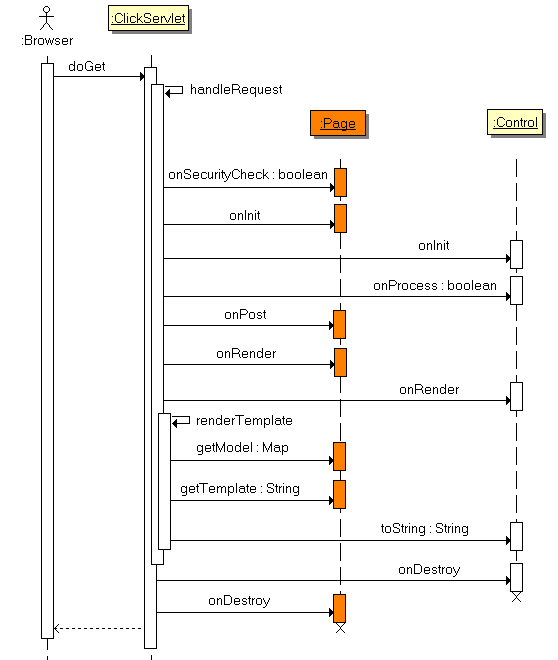

org.apache.click.Page
org.apache.click.Page
|
|||||||||
| PREV CLASS NEXT CLASS | FRAMES NO FRAMES | ||||||||
| SUMMARY: NESTED | FIELD | CONSTR | METHOD | DETAIL: FIELD | CONSTR | METHOD | ||||||||
java.lang.Object
public class Page
Provides the Page request event handler class.
The Page class plays a central role in Click applications defining how the application's pages are processed and rendered. All application pages must extend the base Page class, and provide a no arguments constructor.format property is set
headers property is set
path property is set
onSecurityCheck() method called to check whether the page should
be processed. This method should return true if the Page should continue
to be processed, or false otherwise.
onInit() method called to complete the initialization of the page
after all the dependencies have been set. This is where you should put
any "dynamic" page initialization code which depends upon the request or any
other dependencies.
Form and field controls must be fully initialized by the time this method
has completed.
controls
calling their Control.onProcess() method. If any of these
controls return false, continued control and page processing will be aborted.
onGet() method called for any additional GET related processing.
Form and field controls should NOT be created or initialized at this
point as the control processing stage has already been completed.
onRender() method called for any pre-render processing. This
method is often use to perform database queries to load information for
rendering tables.
Form and field controls should NOT be created or initialized at this
point as the control processing stage has already been completed.
model with the
Velocity template defined by the getTemplate() property.
onDestroy() method called to clean up any resources. This method
is guaranteed to be called, even if an exception occurs. You can use
this method to close resources like database connections or Hibernate
sessions.
onPost() method is called instead of onGet(). The POST
request page execution sequence is illustrated below:

A good way to see the page event execution order is to view the log when
the application mode is set to trace:
[Click] [debug] GET http://localhost:8080/quickstart/home.htm [Click] [trace] invoked: HomePage.<<init>> [Click] [trace] invoked: HomePage.onSecurityCheck() : true [Click] [trace] invoked: HomePage.onInit() [Click] [trace] invoked: HomePage.onGet() [Click] [trace] invoked: HomePage.onRender() [Click] [info ] renderTemplate: /home.htm - 6 ms [Click] [trace] invoked: HomePage.onDestroy() [Click] [info ] handleRequest: /home.htm - 24 ms
getTemplate() to find the Velocity template.model to populate the Velocity Contextformat to add to the Velocity ContextgetContentType() to set as the HttpServletResponse content typeheaders to set as the HttpServletResponse headers
| Field Summary | |
|---|---|
protected List<Control> |
controls
The list of page controls. |
protected Format |
format
The Velocity template formatter object. |
protected String |
forward
The forward path. |
protected List<Element> |
headElements
The list of page HTML HEAD elements including: Javascript imports, Css imports, inline Javascript and inline Css. |
protected Map<String,Object> |
headers
The HTTP response headers. |
protected boolean |
includeControlHeadElements
Indicates whether Control head elements should be included in the page template, default value is true. |
protected Map<String,String> |
messages
The map of localized page resource messages. |
protected Map<String,Object> |
model
The page model. |
static String |
PAGE_ACTION
The Page action request parameter: "pageAction". |
static String |
PAGE_MESSAGES
The global page messages bundle name: click-page. |
protected PageImports |
pageImports
The Page header imports. |
protected String |
path
The path of the page template to render. |
protected String |
redirect
The redirect path. |
protected boolean |
stateful
Deprecated. stateful pages are not supported anymore, use stateful Controls instead |
protected String |
template
The path of the page border template to render. |
| Constructor Summary | |
|---|---|
Page()
|
|
| Method Summary | |
|---|---|
void |
addControl(Control control)
Add the control to the page. |
void |
addModel(String name,
Object value)
Add the named object value to the Pages model map. |
String |
getContentType()
Return the HTTP response content type. |
Context |
getContext()
Return the request context of the page. |
List<Control> |
getControls()
Return the list of page Controls. |
Format |
getFormat()
Return the Velocity template formatter object. |
String |
getForward()
Return the path to forward the request to. |
List<Element> |
getHeadElements()
Return the list of HEAD elements
to be included in the page. |
Map<String,Object> |
getHeaders()
Return the map of HTTP header to be set in the HttpServletResponse. |
String |
getHtmlImports()
Deprecated. use the new getHeadElements() instead |
String |
getMessage(String name)
Return the localized Page resource message for the given resource name or null if not found. |
String |
getMessage(String name,
Object... args)
Return the formatted page message for the given resource name and message format arguments or null if no message was found. |
Map<String,String> |
getMessages()
Return a Map of localized messages for the Page. |
Map<String,Object> |
getModel()
Return the Page's model map. |
PageImports |
getPageImports()
Deprecated. use the new getHeadElements() instead |
String |
getPath()
Return the path of the Template or JSP to render. |
String |
getRedirect()
Return the path to redirect the request to. |
String |
getTemplate()
Return the path of the page border template to render, by default this method returns getPath(). |
boolean |
hasControls()
Return true if the page has any controls defined. |
boolean |
hasHeaders()
Return true if the page has headers, false otherwise. |
boolean |
isIncludeControlHeadElements()
Return true if the Control head elements should be included in the page template, false otherwise. |
boolean |
isStateful()
Deprecated. stateful pages are not supported anymore, use stateful Controls instead |
void |
onDestroy()
The on Destroy request event handler. |
void |
onGet()
The on Get request event handler. |
void |
onInit()
The on Initialization event handler. |
void |
onPost()
The on Post request event handler. |
void |
onRender()
The on render event handler. |
boolean |
onSecurityCheck()
The on Security Check event handler. |
void |
removeControl(Control control)
Remove the control from the page. |
void |
setFormat(Format value)
Set the Velocity template formatter object. |
void |
setForward(Class<? extends Page> pageClass)
Set the request to forward to the given page class. |
void |
setForward(Page page)
The Page instance to forward the request to. |
void |
setForward(String value)
Set the path to forward the request to. |
void |
setHeader(String name,
Object value)
Set the named header with the given value. |
void |
setHeaders(Map<String,Object> value)
Set the map of HTTP header to be set in the HttpServletResponse. |
void |
setIncludeControlHeadElements(boolean includeControlHeadElements)
Set whether the Control head elements should be included in the page template. |
void |
setPageImports(PageImports pageImports)
Deprecated. use the new getHeadElements() instead |
void |
setPath(String value)
Set the path of the Template or JSP to render. |
void |
setRedirect(Class<? extends Page> pageClass)
Set the request to redirect to the give page class. |
void |
setRedirect(Class<? extends Page> pageClass,
Map<String,?> params)
Set the request to redirect to the given page class and and append the map of request parameters to the page URL. |
void |
setRedirect(String location)
Set the location to redirect the request to. |
void |
setRedirect(String location,
Map<String,?> params)
Set the request to redirect to the given location and append
the map of request parameters to the location URL. |
void |
setStateful(boolean stateful)
Deprecated. stateful pages are not supported anymore, use stateful Controls instead |
void |
setTemplate(String template)
Set the page border template path. |
| Methods inherited from class java.lang.Object |
|---|
clone, equals, finalize, getClass, hashCode, notify, notifyAll, toString, wait, wait, wait |
| Field Detail |
|---|
public static final String PAGE_MESSAGES
public static final String PAGE_ACTION
protected List<Control> controls
protected List<Element> headElements
protected Format format
protected String forward
protected Map<String,Object> headers
protected transient Map<String,String> messages
protected Map<String,Object> model
protected transient PageImports pageImports
protected String path
protected String redirect
protected boolean stateful
protected String template
protected boolean includeControlHeadElements
| Constructor Detail |
|---|
public Page()
| Method Detail |
|---|
public boolean onSecurityCheck()
public void onInit()
onInit() method has been called.
Subclasses should place any initialization code which has dependencies
on the context or other properties in this method. Generally light
weight initialization code should be placed in the Pages constructor.
Time consuming operations such as fetching the results of a database
query should not be placed in this method. These operations should be
performed in the onRender(), onGet() or
onPost() methods so that other event handlers may take
alternative execution paths without performing these expensive operations.
Please Note however the qualifier for the previous statement is
that all form and field controls must be fully initialized before they
are processed, which is after the onInit() method has
completed. After this point their onProcess() methods will be
invoked by the ClickServlet.
Select controls in particular must have their option list values populated
before the form is processed otherwise field validations cannot be performed.
For initializing page controls the best practice is to place all the
control creation code in the pages constructor, and only place any
initialization code in the onInit() method which has an external
dependency to the context or some other object. By following this practice
it is easy to see what code is "design time" initialization code and what
is "runtime initialization code".
When subclassing pages which also use the onInit() method is
is critical you call the super.onInit() method first, for
example:
public void onInit() { super.onInit(); // Initialization code .. }
public void onGet()
onSecurityCheck() has been
called and all the Page controls have been processed. If either
the security check or one of the controls cancels continued event
processing the onGet() method will not be invoked.
public void onPost()
onSecurityCheck() has been
called and all the Page controls have been processed. If either
the security check or one of the controls cancels continued event
processing the onPost() method will not be invoked.
public void onRender()
public void onDestroy()
public void addControl(Control control)
control - the control to add to the page
IllegalArgumentException - if the control is null or if the name
of the control is not definedpublic void removeControl(Control control)
control - the control to remove
IllegalArgumentException - if the control is null, or if the name
of the control is not definedpublic List<Control> getControls()
public boolean hasControls()
public Context getContext()
public String getContentType()
ServletRequest.getCharacterEncoding()
then this method will return "text/html; charset=encoding".
The ClickServlet uses the pages content type for setting the
HttpServletResponse content type.
public Format getFormat()
public void setFormat(Format value)
value - the Velocity template formatter object.public String getForward()
forward property is not null it will be used to forward
the request to in preference to rendering the template defined by the
path property. The request is forwarded using the
RequestDispatcher.
See also getPath(), getRedirect()
public void setForward(String value)
forward property is not null it will be used to forward
the request to in preference to rendering the template defined by the
path property. The request is forwarded using the Servlet
RequestDispatcher.
If forward paths start with a "/"
character the forward path is
relative to web applications root context, otherwise the path is
relative to the requests current location.
For example given a web application deployed to context mycorp
with the pages:
/index.htm /customer/search.htm /customer/details.htm /customer/management/add-customer.htmTo forward to the customer search.htm page from the web app root you could set forward as setForward() or setForward(). If a user was currently viewing the add-customer.htm to forward to customer details.htm you could set forward as setForward() or setForward(). See also
setPath(String), setRedirect(String)
value - the path to forward the request topublic void setForward(Page page)
path defined, as the path specifies
the location to forward to.
page - the Page object to forward the request to.setForward(java.lang.String)public void setForward(Class<? extends Page> pageClass)
pageClass - the class of the Page to forward the request to
IllegalArgumentException - if the Page Class is not configured
with a unique pathsetForward(java.lang.String)public Map<String,Object> getHeaders()
public boolean hasHeaders()
public void setHeader(String name,
Object value)
name - the name of the headervalue - the value of the header, either a String, Date or Integerpublic void setHeaders(Map<String,Object> value)
value - the map of HTTP header to be set in the HttpServletResponsepublic final String getHtmlImports()
getHeadElements() instead
public List<Element> getHeadElements()
elements
to be included in the page. Example HEAD elements include
JsImport,
JsScript,
CssImport and
CssStyle.
Pages can contribute their own list of HEAD elements by overriding
this method.
The recommended approach when overriding this method is to use
lazy loading to ensure the HEAD elements are only added
once and when needed. For example:
public MyPage extends Page {
public List getHeadElements() {
// Use lazy loading to ensure the JS is only added the
// first time this method is called.
if (headElements == null) {
// Get the head elements from the super implementation
headElements = super.getHeadElements();
// Include the page's external Javascript resource
JsImport jsImport = new JsImport("/mycorp/js/mypage.js");
headElements.add(jsImport);
// Include the page's external Css resource
CssImport cssImport = new CssImport("/mycorp/js/mypage.css");
headElements.add(cssImport);
}
return headElements;
}
}
Alternatively one can add the HEAD elements in the Page constructor:
public MyPage extends Page {
public MyPage() {
JsImport jsImport = new JsImport("/mycorp/js/mypage.js");
getHeadElements().add(jsImport);
CssImport cssImport = new CssImport("/mycorp/js/mypage.css");
getHeadElements().add(cssImport);
}
}
One can also add HEAD elements from event handler methods such as
onInit(), onGet(), onPost(), onRender()
etc.
The order in which JS and CSS files are included will be preserved in the
page.
Note: this method must never return null. If no HEAD elements
are available this method must return an empty List.
Also note: a common problem when overriding getHeadElements in
subclasses is forgetting to call super.getHeadElements. Consider
carefully whether you should call super.getHeadElements or not.
public String getMessage(String name)
package com.mycorp.pages; public class Login extends Page { ..The page class property filenames and their path:
/com/mycorp/pages/Login.properties /com/mycorp/pages/Login_en.properties /com/mycorp/pages/Login_fr.propertiesPage messages can also be defined in the optional global messages bundle:
/click-page.propertiesTo define global page messages simply add click-page.properties file to your application's class path. Message defined in this properties file will be available to all of your application pages. Note messages in your page class properties file will override any messages in the global click-page.properties file. Page messages can be accessed directly in the page template using the $messages reference. For examples:
$messages.title
Please see the MessagesMap adaptor for more
details.
name - resource name of the message
public String getMessage(String name,
Object... args)
getMessage(java.lang.String) is invoked to retrieve the message
for the specified name.
name - resource name of the messageargs - the message arguments to format
public Map<String,String> getMessages()
IllegalStateException - if the context for the Page has not be setgetMessage(String)
public void addModel(String name,
Object value)
name - the key name of the object to addvalue - the object to add
IllegalArgumentException - if the name or value parameters are
nullpublic Map<String,Object> getModel()
public PageImports getPageImports()
getHeadElements() instead
ClickServlet.createTemplateModel(Page) - for template pagesClickServlet.setRequestAttributes(Page) - for JSP pagesClickServlet.createPageImports(org.apache.click.Page)
public void setPageImports(PageImports pageImports)
getHeadElements() instead
ClickServlet.createTemplateModel(Page) - for template pagesClickServlet.setRequestAttributes(Page) - for JSP pagesgetPageImports() method and modify the PageImports object
returned.
If you need to create a custom PageImports, override the method
ClickServlet.createPageImports(org.apache.click.Page)
pageImports - the new pageImports instance to setpublic String getPath()
getForward(), getRedirect()
public void setPath(String value)
public void onGet() {
setPath("/some-other-template.htm");
}
And here is an example if you want to change the path to a different JSP.
public void onGet() {
setPath("/some-other-jsp.jsp");
}
If path is set to null, Click will not perform any rendering.
This is useful when you want to stream or write directly to the
HttpServletResponse.
See also setForward(String), setRedirect(String)
value - the path of the Template or JSP to renderpublic String getRedirect()
redirect property is not null it will be used to redirect
the request in preference to forward or path properties.
The request is redirected to using the HttpServletResponse.setRedirect()
method.
See also getForward(), getPath()
public boolean isStateful()
public void setStateful(boolean stateful)
stateful - the flag indicating whether the page should be saved
between user requestspublic boolean isIncludeControlHeadElements()
setIncludeControlHeadElements(boolean)public void setIncludeControlHeadElements(boolean includeControlHeadElements)
head elements, however the Page head elements
will still be included.
This allows one to create a single JavaScript and CSS resource file for
the entire Page which increases performance, since the browser only has
to load one resource, instead of multiple resources.
Below is an example:
public class HomePage extends Page {
private Form form = new Form("form");
public HomePage() {
// Indicate that Controls should not import their head elements
setIncludeControlHeadElements(false);
form.add(new EmailField("email");
addControl(form);
}
// Include the Page JavaScript and CSS resources
public List getHeadElements() {
if (headElements == null) {
headElements = super.getHeadElements();
// Include the Page CSS resource. This resource should combine
// all the CSS necessary for the page
headElements.add(new CssImport("/assets/css/home-page.css"));
// Include the Page JavaScript resource. This resource should
// combine all the JavaScript necessary for the page
headElements.add(new JsImport("/assets/js/home-page.js"));
}
return headElements;
}
}
includeControlHeadElements - flag indicating whether Control
head elements should be included in the pagepublic void setRedirect(String location)
redirect property is not null it will be used to redirect
the request in preference to the forward and path
properties. The request is redirected using the HttpServletResponse.setRedirect()
method.
If the redirect location begins with a "/"
character the redirect location will be prefixed with the web applications
context path. Note if the given location is already prefixed
with the context path, Click won't add it a second time.
For example if an application is deployed to the context
"mycorp" calling
setRedirect()
will redirect the request to:
"/mycorp/customer/details.htm"
If the redirect location does not begin with a "/"
character the redirect location will be used as specified. Thus if the
location is http://somehost.com/myapp/customer.jsp,
Click will redirect to that location.
JSP note: when redirecting to a JSP template keep in mind that the
JSP template won't be processed by Click, as ClickServlet is mapped to
*.htm. Instead JSP templates are processed by the Servlet
container JSP engine.
So if you have a situation where a Page Class
() is mapped to the JSP
() and you want to redirect to
Customer.class, you could either redirect to
() or
use the alternative redirect utility setRedirect(java.lang.Class).
Please note that Click will url encode the location by invoking
response.encodeRedirectURL(location) before redirecting.
See also setRedirect(java.lang.String, java.util.Map),
setForward(String), setPath(String)
location - the path to redirect the request topublic void setRedirect(Class<? extends Page> pageClass)
pageClass - the class of the Page to redirect the request to
IllegalArgumentException - if the Page Class is not configured
with a unique pathsetRedirect(java.lang.String)
public void setRedirect(String location,
Map<String,?> params)
location and append
the map of request parameters to the location URL.
The map keys will be used as the request parameter names and the map
values will be used as the request parameter values. For example:
public boolean onSave() {
// Specify redirect parameters
Map parameters = new HashMap();
parameters.put("customerId", getCustomerId());
// Set redirect to customer.htm page
setRedirect("/customer.htm", parameters);
return false;
}
To render multiple parameter values for the same parameter name, specify
the values as a String[] array. For example:
public boolean onSave() {
// Specify an array of customer IDs
String[] ids = {"123", "456", "789"};
// Specify redirect parameters
Map parameters = new HashMap();
parameters.put("customerIds", ids);
// Set redirect to customer.htm page
setRedirect("/customer.htm", parameters);
return false;
}
location - the path to redirect the request toparams - the map of request parameter name and value pairssetRedirect(java.lang.String)
public void setRedirect(Class<? extends Page> pageClass,
Map<String,?> params)
pageClass - the class of the Page to redirect the request toparams - the map of request parameter name and value pairs
IllegalArgumentException - if the Page Class is not configured
with a unique pathsetRedirect(java.lang.String, java.util.Map),
setRedirect(java.lang.String)public String getTemplate()
getPath().
Pages can override this method to return an alternative border page
template. This is very useful when implementing an standardized look and
feel for a web site. The example below provides a BorderedPage base Page
which other site templated Pages should extend.
public class BorderedPage extends Page { public String getTemplate() { return "border.htm"; } }The BorderedPage returns the page border template "border.htm":
<html>
<head>
<title> $title </title>
<link rel="stylesheet" type="text/css" href="style.css" title="Style"/>
</head>
<body>
<h1> $title </h1>
<hr/>
#parse( $path )
</body>
</html>
Other pages insert their content into this template, via their
path property using the Velocity
#parse
directive. Note the $path value is automatically
added to the VelocityContext by the ClickServlet.
getPath()public void setTemplate(String template)
getTemplate() will default
to getPath().
template - the border template path
|
|||||||||
| PREV CLASS NEXT CLASS | FRAMES NO FRAMES | ||||||||
| SUMMARY: NESTED | FIELD | CONSTR | METHOD | DETAIL: FIELD | CONSTR | METHOD | ||||||||